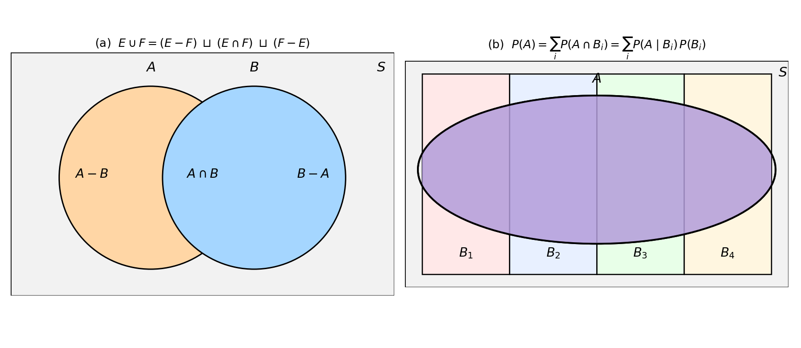

14. Probability basics: experiments, sample spaces, Bayes
Part I built the machinery of optimization: follow the gradient down, fold constraints into the Lagrangian, exploit convexity, certify with KKT (§13.15 closed the arc: “Part II puts probability underneath it”). Why underneath? Because machine learning runs on uncertainty — noisy measurements, random sampling, models that output beliefs rather than certainties. Before any of that machinery can touch data, we need a mathematical language for chance. That is Part II, and it starts here, at the very beginning: what does it mean to assign a number to how likely something is?
The Stats 2 lectures frame the whole course with a running example — IPL cricket, 2008–2020, 816 matches of ball-by-ball data. The first step is descriptive: average runs per powerplay over climb from \(6.00\) (Over 1) to \(8.30\) (Over 6), with standard deviations around \(4\). The next step is modeling: “Are there models that explain the observed patterns in the data? How will you simulate powerplay overs in an IPL innings?” Simulation needs probability — a “mathematical” theory that assigns chances to events: define the basic objects precisely, assume a few things (the axioms), and deduce everything else by logical proof. This chapter builds exactly that.
14.1 Experiments and outcomes
Def. An experiment = a process or phenomenon we wish to study statistically. An outcome = the result of the experiment, described in as much detail as necessary.
- Toss a coin: outcomes heads, tails.
- Throw a die: outcomes \(1, 2, 3, 4, 5, 6\).
- IPL powerplay: the outcome could be the full yaml file of ball-by-ball data — “lots of details”. What counts as an outcome depends on what you are studying.
Basically, … The experiment is “what you do”; the outcome is “what happened”. The same real-world process can be a different experiment depending on how much detail you record — one delivery’s runs, or the whole match file.
14.2 The sample space
Def. The sample space \(S\) = the set of all outcomes of an experiment.
- Toss a coin: \(S = \{\text{heads}, \text{tails}\}\).
- Throw a die: \(S = \{1, 2, 3, 4, 5, 6\}\).
- IPL: runs scored off one delivery: \(S = \{0, 1, 2, 3, \dots\}\). Winner of a season: \(S = \{\text{CSK}, \text{MI}, \text{DC}, \dots\}\).
- Urn with \(3\) red, \(3\) white, \(3\) blue marbles; draw one: \(S = \{\text{red}, \text{white}, \text{blue}\}\).
- Draw a card from a shuffled pack: \(S = \{\text{spades}, \text{hearts}, \text{diamonds}, \text{clubs}\} \times \{2, 3, \dots, 10, J, Q, K, A\}\) — a Cartesian product (§1.6).
Sample spaces come in three sizes: finite (a die); countably infinite (the number of coin tosses until the first head: \(\{1, 2, 3, \dots\}\) — the outcomes can be listed first, second, third, \(\dots\)); and uncountably infinite (the exact landing point of a thrown dart, or the exact rainfall in a year — a continuum, no listing possible).
Note: In practice you rarely write \(S\) down completely — for the IPL it is “too big to write down”. Quite often it is enough to imagine a sample space. But the lectures give good advice: when interpreting probabilities becomes confusing, thinking of the sample space can be of use.
Basically, … The sample space is the guest list: every possible result, listed once. It can be tiny (\(2\) outcomes), infinite but listable, or a continuum. You don’t always write the whole list — but you should always know the list exists.
14.3 Events: subsets of the sample space
Def. An event = a subset of the sample space. An event is said to have occurred if the actual outcome belongs to the subset.
- Coin: \(S = \{H, T\}\) has \(2^2 = 4\) events: \(\emptyset, \{H\}, \{T\}, \{H, T\}\).
- Die: \(S = \{1, \dots, 6\}\) has \(2^6 = 64\) events — e.g. “even number” \(= \{2, 4, 6\}\), “multiple of 3” \(= \{3, 6\}\).
- Fisherman: “catch is more than \(100\) Kg”, “pomfret is in the catch” — perfectly good events, even though nobody wrote down \(S\).
Note (the technical restriction). The lectures mention “a technical restriction on what subsets can be events”, ignored “for now, and pointed out later when necessary”. Its standard name: the events must form a \(\sigma\)-algebra — a collection closed under complements and countable unions, so anything you build with set operations stays an event. For every finite or countable sample space in this chapter, “every subset is an event” works fine; the restriction only bites for uncountable sample spaces (Chapter 16 will say more).
Basically, … An event is a question about the outcome, phrased as a set: “did the outcome land in this set?” If yes, the event occurred. That’s all an event is.
14.4 Combining events: union, intersection, complement
Events are sets, so all of §1.5 applies:
- Union \(A \cup B\) = “or”: outcomes in \(A\) or in \(B\) (or both). Die: “even or a multiple of 3” \(= \{2, 3, 4, 6\}\).
- Intersection \(A \cap B\) = “and”: outcomes in both. Die: “even and a multiple of 3” \(= \{6\}\).
- Complement \(A^c = S \setminus A\) = “not”: outcomes not in \(A\). Die: \(\text{even}^c = \text{odd} = \{1, 3, 5\}\). If \(A\) occurred, \(A^c\) did not, and vice versa.
Translating English into events is a core skill. The lectures’ IPL example: one over of six deliveries, each worth \(0, 1, 2, 3, 4\) or \(6\) runs. Let \(A =\) “no 4s in the over”, \(B =\) “no 6s in the over”, \(C =\) “exactly \(20\) runs scored”. Then \(A \cup B\) = “the over had no 4s or no 6s”, \(A \cap B\) = “no 4s and no 6s”. Complements follow De Morgan’s laws: \[(A \cup B)^c = A^c \cap B^c, \qquad (A \cap B)^c = A^c \cup B^c.\] So \((A \cup B)^c\) = “at least one 4 and at least one 6”, and \((A \cap B)^c\) = “at least one 4 or at least one 6”. (Problem 3 asks whether \(A \cap B \cap C\) can occur.)
eg 1. Let \(S = \{a, b, c, d, e\}\), \(E = \{a, b, e\}\), \(F = \{b, c\}\). Then \(E^c = \{c, d\}\), \(F^c = \{a, d, e\}\), \(E \cup F = \{a, b, c, e\}\), \(E \cap F = \{b\}\), \(E \setminus F = E \cap F^c = \{a, e\}\), \(F \setminus E = \{c\}\).
Basically, … “Or” = union, “and” = intersection, “not” = complement. De Morgan says: the opposite of “A or B” is “not A and not B” — the and/or flip when you negate.
14.5 Disjoint events and partitions
Def. Two events are disjoint (mutually exclusive) if \(A \cap B = \emptyset\).
- Die: even and odd are disjoint. Fisherman: “more than \(200\) Kg” and “less than \(50\) Kg” are disjoint.
- \(A\) and \(A^c\) are disjoint, and together they cover everything: \(A \cup A^c = S\) — either \(A\) occurs or \(A^c\) occurs.
- Events \(E_1, E_2, \dots\) are (pairwise) disjoint if \(E_i \cap E_j = \emptyset\) for every \(i \ne j\). Drawing a card: spades, hearts, diamonds, clubs are disjoint.
Def. A partition of \(S\) = a collection of disjoint events whose union is \(S\). The simplest partition is \(\{B, B^c\}\); a finer one is \(B_1, B_2, B_3, B_4\) (panel (b) of the figure).
Basically, … Disjoint events can’t happen together. A partition chops the whole sample space into non-overlapping pieces that cover everything — like cutting a cake with no crumbs left over. Partitions are the scaffolding the law of total probability (§14.10) is built on.
14.6 The probability function and its three axioms
Def. Probability \(P\) = a function that assigns to each event a real number in \([0, 1]\), satisfying:
- Non-negativity: \(P(E) \ge 0\) for every event \(E\).
- Normalization: \(P(S) = 1\).
- Countable additivity: if \(E_1, E_2, \dots\) are disjoint, then \[P(E_1 \cup E_2 \cup \cdots) = P(E_1) + P(E_2) + \cdots\]
The sample space, the events, and \(P\) together are called a probability space. (The lectures present Axioms 2 and 3 as “the two axioms”, with the \([0, 1]\) codomain stated in the definition itself; written as three, these are Kolmogorov’s axioms — the standard form used everywhere.)
\(0\) means the event cannot occur, \(1\) means it always occurs; a higher value means a higher chance. One warning from the lectures, worth keeping: this meaning of probability is not part of the mathematics. The theory assumes only the axioms — everything else is deduced by proof.
eg 2. Coin, \(S = \{H, T\}\). Valid: \(P(\emptyset) = 0\), \(P(\{H\}) = p\), \(P(\{T\}) = 1 - p\), \(P(S) = 1\) for any \(0 \le p \le 1\) — a fair coin is \(p = 1/2\). Invalid: \(P(\{H\}) = 0.5\), \(P(\{T\}) = 0.6\): the singletons are disjoint with union \(S\), so Axiom 3 forces \(P(S) = 0.5 + 0.6 = 1.1 \ne 1\), contradicting Axiom 2.
Basically, … The axioms are the rules of the game: chances can’t be negative, something must happen (total chance \(1\)), and chances of non-overlapping events add up. Every formula in this chapter is a logical consequence of these three.
14.7 Consequences of the axioms
Four properties, each proved from the axioms alone (the lectures’ proofs, in the lectures’ order):
Empty set. \(P(\emptyset) = 0\). Proof. \(\emptyset^c = S\), and \(\emptyset, S\) are disjoint with \(\emptyset \cup S = S\). By Axiom 3, \(P(S) = P(\emptyset) + P(S)\), so \(P(\emptyset) = 0\).
Complement. \(P(E^c) = 1 - P(E)\). Proof. \(E, E^c\) are disjoint and \(E \cup E^c = S\), so \(1 = P(S) = P(E) + P(E^c)\).
Subset / monotonicity. If \(E \subseteq F\) then \(P(F) = P(E) + P(F \setminus E)\), hence \(P(E) \le P(F)\). Proof. \(E\) and \(F \setminus E = F \cap E^c\) are disjoint with union \(F\); apply Axiom 3. (The lectures’ intuition check: if \(A \subseteq B\), \(P(B)\) “should be higher than” \(P(A)\) — and it is.)
Difference form. \(P(E) = P(E \cap F) + P(E \setminus F)\) (and symmetrically \(P(F) = P(E \cap F) + P(F \setminus E)\)). Proof. \(E \cap F \subseteq E\); apply (iii), noting \(E \setminus (E \cap F) = E \setminus F\).
Inclusion–exclusion (union formula). \[P(E \cup F) = P(E) + P(F) - P(E \cap F).\] Proof. \(E \cup F\) splits into three disjoint pieces — \(E \setminus F\), \(E \cap F\), \(F \setminus E\) (panel (a) of the figure) — so by Axiom 3, \(P(E \cup F) = P(E \setminus F) + P(E \cap F) + P(F \setminus E)\). Substituting \(P(E \setminus F) = P(E) - P(E \cap F)\) and \(P(F \setminus E) = P(F) - P(E \cap F)\) from (iv) gives the formula.
eg 3 (fishing town). Chance of catching more than \(400\) Kg of fish in a day: \(35\%\); more than \(500\) Kg: \(10\%\). Let \(F =\) “catch \(> 400\)”, \(E =\) “catch \(> 500\)”; then \(E \subseteq F\). By (iii), \(P(F \setminus E) = P(F) - P(E) = 0.35 - 0.10 = 0.25\). So the chance of catching between \(400\) and \(500\) Kg is \(\boxed{25\%}\).
eg 4 (weather forecast). \(P(\text{rain}) = 0.6\), \(P(\text{max temp above } 30^\circ) = 0.7\), \(P(\text{rain and temp above } 30^\circ) = 0.4\). By inclusion–exclusion, \(P(\text{rain} \cup \text{hot}) = 0.6 + 0.7 - 0.4 = 0.9\). “No rain and temp below \(30^\circ\)” is the complement, so \(P = 1 - 0.9 = \boxed{0.10}\) — a \(10\%\) chance.
Basically, … Never add probabilities of overlapping events naively — that double-counts the overlap. Inclusion–exclusion says: add both, then subtract the overlap once. And “A but not B” is just \(P(A) - P(\text{both})\).

14.8 Equally likely outcomes and counting
When the sample space is countable, one can assign probabilities to individual outcomes — and for a finite \(S\) with symmetry, the natural choice is the uniform distribution: every outcome gets probability \(1/|S|\), and \[P(\text{event}) = \frac{\text{number of outcomes in the event}}{\text{number of outcomes in } S}.\] Why this works: the \(|S|\) singleton outcomes are disjoint with union \(S\), so Axiom 3 forces their probabilities to sum to \(1\); “equally likely” makes them all equal, hence \(1/|S|\) each.
eg 5 (two dice). \(S\) = the \(36\) ordered pairs — a Cartesian product (§1.6). “Sum is \(8\)”: \(\{(2,6), (3,5), (4,4), (5,3), (6,2)\}\) — \(5\) outcomes. \(P = \boxed{5/36}\).
eg 6 (urn). \(5\) red and \(8\) blue marbles; draw one at random. \(S\) has \(13\) equally likely outcomes, so \(P(\text{red}) = \boxed{5/13}\).
eg 7 (mixed-up hats, 3 persons). Three identical hats get mixed; each person picks one at random. \(S\) = the \(3! = 6\) orderings, equally likely. “Nobody gets their own hat” = the derangements \((2,3,1)\) and \((3,1,2)\) — \(2\) outcomes. \(P = \boxed{2/6 = 1/3}\).
eg 8 (lost keys). An apartment key is lost; security hands over \(50\) possible keys, tried one after another until the match. The natural outcome is which key is the matching one: \(S = \{1, 2, \dots, 50\}\). Is the uniform distribution reasonable? Yes — with no information distinguishing the keys, symmetry gives each \(P = 1/50\). (The uniform choice is an assumption justified by symmetry; real information, like remembering the key was bent, would change it.)
Basically, … “Picked at random” almost always means “every outcome equally likely”. Then probability is just counting: how many outcomes you like, divided by how many there are. The whole game is setting up the right sample space — the counting after that is mechanical.
14.9 Conditional probability
Many experiments run in steps — toss a coin three times, throw a die twice, one IPL delivery after another. The initial sample space for three tosses is \(S = \{HHH, HHT, \dots, TTT\}\) (\(8\) outcomes). Now suppose you observe the first toss: event \(B\) = “first toss is tails” occurred. For the remaining tosses the relevant sample space shrinks to \(B = \{THH, THT, TTH, TTT\}\) — and the events and probabilities must be redefined to account for \(B\) having occurred. This is the conditional probability space given \(B\).
Def. For an event \(B\) with \(P(B) > 0\), the conditional probability of \(A\) given \(B\) = \[P(A \mid B) = \frac{P(A \cap B)}{P(B)}.\] Equivalently, the multiplication rule: \(P(A \cap B) = P(B)\,P(A \mid B)\). Read \(P(A \mid B)\) as “the probability of \(A\) in the world where \(B\) is known to have occurred”.
Note: In ordinary language the word “conditional” is often dropped — “the probability both are girls, given at least one is a girl” is stated as if it were unconditional. Watch for the hidden “given”.
eg 9 (die, given even). Fair die, \(E = \{2, 4, 6\}\), \(P(E) = 1/2\). Then \(P(\{2\} \mid E) = P(\{2\} \cap E)/P(E) = (1/6)/(1/2) = \boxed{1/3}\); likewise \(P(\{4\} \mid E) = P(\{6\} \mid E) = 1/3\), while \(P(\{1\} \mid E) = P(\emptyset)/P(E) = 0\). Also \(P(\{2,5\} \mid E) = 1/3\) and \(P(\{2,3,4\} \mid E) = P(\{2,4\})/P(E) = (1/3)/(1/2) = \boxed{2/3}\).
eg 10 (family with two children). \(S = \{GG, GB, BG, BB\}\) (birth order), equally likely. \(B =\) “at least one girl” \(= \{GG, GB, BG\}\), \(P(B) = 3/4\). \(A =\) “both girls” \(= \{GG\}\). Then \(P(A \mid B) = (1/4)/(3/4) = \boxed{1/3}\) — not \(1/2\). Conditioning shrinks the denominator, not just the numerator.
eg 11 (sequential draws: the multiplication chain). A class of \(15\) students: \(4\) from State 1, \(8\) from State 2, \(3\) from State 3. Three different students are chosen one after another. \(P(\text{State 1, then State 3, then State 1})\): \[\frac{4}{15} \cdot \frac{3}{14} \cdot \frac{3}{13} = \frac{36}{2730} = \boxed{\frac{6}{455} \approx 0.0132}.\] Each factor is a conditional probability given the earlier draws — the multiplication rule applied twice. (Drawing without replacement changes the conditional probabilities at each step; that shrinking denominator is the whole content of “without replacement”.)
Basically, … Conditioning = zooming in. Once \(B\) is known, throw away every outcome outside \(B\), and rescale the survivors’ probabilities so they still sum to \(1\) — the rescaling factor is \(1/P(B)\).
14.10 The law of total probability
\(A\) is the disjoint union of \(A \cap B\) and \(A \cap B^c\), so by Axiom 3 and the multiplication rule: \[\boxed{P(A) = P(A \cap B) + P(A \cap B^c) = P(A \mid B)\,P(B) + P(A \mid B^c)\,P(B^c).}\] More generally, for a partition \(B_1, B_2, \dots\) of \(S\) (panel (b) of the figure): \[\boxed{P(A) = \sum_i P(A \cap B_i) = \sum_i P(A \mid B_i)\,P(B_i).}\] The law computes an unconditional probability by cases: weigh each case’s conditional probability by the case’s own probability.
eg 12 (two urns). Pick an urn at random, then pick a marble from it. \(P(\text{red} \mid \text{urn 1}) = 7/13\), \(P(\text{red} \mid \text{urn 2}) = 5/13\), \(P(\text{urn 1}) = P(\text{urn 2}) = 1/2\). Then \[P(\text{red}) = \frac{7}{13}\cdot\frac{1}{2} + \frac{5}{13}\cdot\frac{1}{2} = \frac{12}{26} = \boxed{\frac{6}{13}}.\]
eg 13 (economic model). If interest rates rise, \(60\%\) chance unemployment rises; if not, \(30\%\) chance. The economist believes rates rise with \(40\%\) chance. \(P(\text{unemployment rises}) = 0.6 \cdot 0.4 + 0.3 \cdot 0.6 = 0.24 + 0.18 = \boxed{0.42}\).
eg 14 (tricks with coins). \(5\) coins: \(2\) double-headed, \(1\) double-tailed, \(2\) normal. Pick one at random and toss it. Partitioning by which coin was picked: \[P(\text{head}) = 1\cdot\frac{2}{5} + 0\cdot\frac{1}{5} + \frac{1}{2}\cdot\frac{2}{5} = \frac{2}{5} + \frac{1}{5} = \boxed{\frac{3}{5}}.\]
Basically, … The law of total probability is “compute by cases”. You don’t know which urn, coin, or scenario you’re in, so you average over all possibilities — each weighted by how likely it is.
14.11 Bayes’ theorem
The law of total probability goes from causes to effects (\(P(A \mid B)\) known, want \(P(A)\)). Bayes’ theorem goes backwards — from an observed effect to the probable cause: \[\boxed{P(B \mid A) = \frac{P(B)\,P(A \mid B)}{P(A)}}, \qquad P(A) > 0,\; P(B) > 0.\] Proof. \(P(A \cap B) = P(B)\,P(A \mid B) = P(A)\,P(B \mid A)\) — the multiplication rule written two ways. Divide by \(P(A)\). ∎
The denominator \(P(A)\) is usually expanded by the law of total probability over \(\{B, B^c\}\) or a finer partition — the two results always travel together.
eg 15 (two urns, reversed). Same setup as eg 12. A red marble was drawn — which urn did it likely come from? \[P(\text{urn 1} \mid \text{red}) = \frac{P(\text{urn 1})\,P(\text{red} \mid \text{urn 1})}{P(\text{red})} = \frac{\tfrac{1}{2}\cdot\tfrac{7}{13}}{\tfrac{6}{13}} = \boxed{\frac{7}{12}}.\] Slightly above \(1/2\) — urn 1 is redder, so a red draw is weak evidence for urn 1.
eg 16 (diagnostic test: the flu test, full steps). \(1\%\) of people in a city have Swine Flu. The test detects \(95\%\) of true cases (\(P(\text{positive} \mid \text{flu}) = 0.95\)), but \(2\%\) of healthy people also test positive (\(P(\text{positive} \mid \text{no flu}) = 0.02\)). A randomly chosen person tests positive. What is \(P(\text{flu} \mid \text{positive})\)?
- Name the events: \(B =\) “has Swine Flu”, \(A =\) “tests positive”. Given: \(P(B) = 0.01\), \(P(B^c) = 0.99\), \(P(A \mid B) = 0.95\), \(P(A \mid B^c) = 0.02\).
- Denominator by the law of total probability: \[P(A) = P(A \mid B)P(B) + P(A \mid B^c)P(B^c) = 0.95 \cdot 0.01 + 0.02 \cdot 0.99 = 0.0095 + 0.0198 = 0.0293.\]
- Bayes: \[P(B \mid A) = \frac{0.01 \cdot 0.95}{0.0293} = \frac{0.0095}{0.0293} \approx \boxed{0.3242 = 32.42\%}.\]
The surprise is genuine: a \(95\%\)-accurate test, a positive result — and still only about one in three actually has the flu. Why? The disease is rare (\(1\%\) base rate): the \(2\%\) false-positive rate, applied to the \(99\%\) healthy majority, produces more positives (\(0.0198\)) than the true cases do (\(0.0095\)). Base rates dominate. This is the single most important intuition Bayes’ theorem teaches — and it recurs in medical testing, spam filters (Chapter 30), and Bayesian inference (Chapter 20).
eg 17 (die, then coins). Roll a fair die, then toss as many fair coins as the number shown. Given \(5\) heads were obtained, what is \(P(\text{die showed } 5)\)?
- Let \(D =\) “die showed 5”, \(F =\) “5 heads obtained”. \(P(D) = 1/6\). Given the die shows \(5\): \(P(F \mid D) = \binom{5}{5}(1/2)^5 = 1/32\).
- Denominator: partition over die faces \(k = 1, \dots, 6\). \(P(F \mid k) = \binom{k}{5}(1/2)^k\) for \(k \ge 5\), and \(0\) otherwise: \[P(F) = \frac{1}{6}\left[\binom{5}{5}\left(\tfrac{1}{2}\right)^5 + \binom{6}{5}\left(\tfrac{1}{2}\right)^6\right] = \frac{1}{6}\left[\frac{1}{32} + \frac{6}{64}\right] = \frac{1}{6}\cdot\frac{4}{32} = \frac{1}{48}.\]
- Bayes: \(P(D \mid F) = \dfrac{(1/32)(1/6)}{1/48} = \dfrac{1/192}{1/48} = \boxed{\dfrac{1}{4}}\).
Basically, … Bayes’ theorem flips a conditional around: you know how likely the evidence is under each hypothesis (the easy direction — the test’s specs), and you want how likely each hypothesis is, given the evidence (what you actually care about). The price of the flip is the denominator — the total probability of the evidence, computed by cases.
14.12 Independence
Motivation: if \(P(B) > 0\) and \(P(A \mid B) = P(A)\), then learning that \(B\) occurred tells you nothing about \(A\) — the conditional world agrees with the original on \(A\).
Def. Events \(A\) and \(B\) are independent if \[\boxed{P(A \cap B) = P(A)\,P(B).}\]
Two rules of thumb from the lectures — keep them on different shelves: - Independent \(E_1, E_2\): multiply for “and”: \(P(E_1 \cap E_2) = P(E_1)P(E_2)\). - Disjoint \(A, B\): add for “or”: \(P(A \cup B) = P(A) + P(B)\).
eg 18 (coin, three tosses). \(S\) = the \(8\) equally likely outcomes. \(A =\) “first toss heads” \(= \{HHH, HHT, HTH, HTT\}\), \(P(A) = 1/2\); \(B =\) “second toss heads” \(= \{HHH, HHT, THH, THT\}\), \(P(B) = 1/2\); \(A \cap B = \{HHH, HHT\}\), \(P = 1/4 = \tfrac{1}{2}\cdot\tfrac{1}{2}\) — independent, as intuition demands. (\(A\) and \(B^c\) are independent too: \(A \cap B^c = \{HTH, HTT\}\), \(P = 1/4\). No accident — see the theorem below.)
eg 19 (die: even and multiple of 3). \(A = \{2, 4, 6\}\), \(P(A) = 1/2\); \(B = \{3, 6\}\), \(P(B) = 1/3\); \(A \cap B = \{6\}\), \(P = 1/6 = \tfrac{1}{2}\cdot\tfrac{1}{3}\) — independent. Two typical confusions, answered: (1) yes, they have an intersection — independence is about probabilities multiplying, not about sets avoiding each other; (2) yes, with a single throw of one die — the two events are two questions about the same outcome, and the questions can be independent of each other.
eg 20 (card: spade and king). \(P(\text{spade}) = 13/52 = 1/4\), \(P(\text{king}) = 4/52 = 1/13\), \(P(\text{spade-king}) = 1/52 = \tfrac{1}{4}\cdot\tfrac{1}{13}\) — independent, despite there being exactly one spade-king card. Same lesson as eg 19.
Disjoint \(\ne\) independent — the crucial contrast. Die: \(A =\) even, \(B =\) odd. \(A \cap B = \emptyset\), so \(P(A \cap B) = 0 \ne \tfrac{1}{2}\cdot\tfrac{1}{2}\). Disjoint events of positive probability are never independent: if \(B\) occurs, \(A\) definitely did not — \(B\)’s occurrence maximally informs \(A\). (Fine print: this needs \(P(A), P(B) > 0\). The empty set is disjoint from everything and independent of everything, since \(P(\emptyset \cap B) = 0 = 0 \cdot P(B)\). A degenerate case worth knowing, not worth worrying about.)
Theorem (independence survives complementing). \(A, B\) independent \(\Rightarrow\) \(A\) and \(B^c\) independent; applying twice, \(A^c\) and \(B^c\) independent. Proof. \(P(A \cap B^c) = P(A \setminus B) = P(A) - P(A \cap B)\) (by §14.7(iv)) \(= P(A) - P(A)P(B) = P(A)(1 - P(B)) = P(A)P(B^c)\). ∎ Intuition: if \(B\) tells you nothing about \(A\), then “not \(B\)” tells you nothing either.
Mutual independence (stronger than pairwise). Three events are mutually independent if every sub-collection multiplies: \[P(A \cap B) = P(A)P(B),\; P(A \cap C) = P(A)P(C),\; P(B \cap C) = P(B)P(C),\; \textbf{and}\; P(A \cap B \cap C) = P(A)P(B)P(C).\] The last condition is not redundant. eg 21: toss a fair coin twice, \(S = \{HH, HT, TH, TT\}\). \(A = \{HH, TT\}\) (“tosses agree”), \(B = \{HH, HT\}\) (“first is heads”), \(C = \{HH, TH\}\) (“second is heads”). \(P(A) = P(B) = P(C) = 1/2\); \(A \cap B = A \cap C = B \cap C = \{HH\}\), each with \(P = 1/4\) — pairwise independent. But \(A \cap B \cap C = \{HH\}\), \(P = 1/4 \ne 1/8 = P(A)P(B)P(C)\). Pairwise independent, not mutually independent.
For \(n\) events: mutually independent means the intersection of any sub-collection has probability equal to the product of the probabilities — “almost \(2^n\) constraints”, as the lectures put it. And the complement theorem extends: any sub-collection, with or without complementing, stays independent.
Basically, … Independence = “knowing one tells you nothing about the other”, made precise as “the ‘and’ probability is the product”. Disjoint is about sets (no overlap); independence is about information (no influence) — they are nearly opposites. And “pairwise independent” is weaker than “mutually independent”: always check the full intersection too.
14.13 Repeated independent trials
Repeat the same experiment \(n\) times independently — toss a coin \(n\) times, test \(n\) people for a disease, send \(n\) bits. Call one trial a success with probability \(p\) (failure \(1 - p\)); write \(1\) for success, \(0\) for failure.
- Sample space: all \(2^n\) binary strings; e.g. \(n = 3\): \(S = \{000, 001, 010, 011, 100, 101, 110, 111\}\).
- Probability of one specific sequence — multiply by independence. For \(n = 3\): \(P(000) = (1-p)^3\), \(P(101) = p(1-p)p = p^2(1-p)\). In general \(P(b_1\dots b_n) = p^{w}(1-p)^{\,n-w}\) where \(w\) = the number of \(1\)s. Only the count of successes matters, not their positions.
- Fair coin, \(n = 5\) (\(p = 1/2\)): all \(32\) sequences equally likely, each \(1/32\). \(P(0 \text{ tails}) = P(HHHHH) = 1/32\). \(P(1 \text{ tail}) = P(\{THHHH, HTHHH, HHTHH, HHHTH, HHHTT\}) = 5/32\) — the five sequences are disjoint, so add (Axiom 3). \(P(\text{at least } 4 \text{ tails}) = P(4 \text{ tails}) + P(5 \text{ tails}) = 5/32 + 1/32 = 6/32\).
- Biased coin, \(n = 5\), \(P(H) = 1/3\), \(P(T) = 2/3\): \(P(HHHHH) = (1/3)^5\), \(P(TTTTT) = (2/3)^5\), and \(P(1 \text{ tail}) = 5 \cdot \tfrac{2}{3}\left(\tfrac{1}{3}\right)^4\) — five disjoint sequences, each with probability \(\tfrac{2}{3}\left(\tfrac{1}{3}\right)^4\).
Note: Counting “how many sequences have exactly \(k\) successes” in general, and naming the resulting distributions (Bernoulli, Binomial, Geometric), is Chapter 15’s job — this section only sets up the machinery (product sample spaces plus independence) that makes those distributions tick.
Basically, … \(n\) independent trials = \(2^n\) sequences, and each sequence’s probability is just the product of its trials. Add up the sequences you like (they’re disjoint). That is the entire engine behind every “repeated experiment” calculation.
14.14 Why this matters: the language every later chapter speaks
This chapter built the vocabulary — experiment, sample space, event, probability, conditioning, independence, Bayes — that the rest of Part II (and the ML chapters) speak fluently:
- Bayes’ theorem is the engine of Bayesian inference: Chapter 20’s MAP estimation is Bayes’ theorem with the parameters as the hypothesis; Chapter 30’s naive Bayes classifier is Bayes’ theorem with a strong independence assumption doing the heavy lifting.
- Independence is the “iid” in “iid data” — the assumption, used in nearly every ML chapter, that datapoints are independent and identically distributed. §14.13’s repeated trials are the prototype.
- The law of total probability becomes marginalization: summing (or integrating) out the variables you don’t care about — the central move of Chapters 17–18 on joint distributions.
- Conditional probability is how ML models express uncertainty: \(P(\text{label} \mid \text{features})\) is a conditional distribution, and Chapters 15–19 develop the random-variable machinery to work with it.
Part II, opening shot. Part I assumed the world hands you a function to optimize. The real world hands you data — noisy, partial, random. Probability is the mathematics of reasoning under that randomness, and statistics is its application: collect data, use probabilistic analysis, make inferences. The next chapter introduces the workhorse object of the whole enterprise: the random variable (Chapter 15).
Problem set
- (Restaurant hiring) Four applicants: David and Megha from Delhi, Rajesh and Veronica from Mumbai. One is hired at random as waiter, another from the remaining as cashier. (a) Write the sample space (\(12\) ordered pairs). (b) Write as subsets: \(A =\) “cashier is from Delhi”, \(B =\) “exactly one position is filled by a Delhiite”, \(C =\) “neither position is filled by a Delhiite”. (c) Under the uniform distribution, find \(P(A)\), \(P(B)\), \(P(C)\).
- (Mixed-up hats, 5 persons) Five identical hats get mixed; each person picks one at random. \(A =\) “no person gets their own hat”, \(B =\) “every person gets their own hat”, \(C =\) “at least one person does not get their own hat”, \(D =\) “at least one person gets their own hat”. (a) What are \(A^c\) and \(B^c\)? (b) Are \(A\) and \(B\) disjoint? (c) What is \(A \cap B^c\)?
- (IPL over) One over, six deliveries, each worth \(0, 1, 2, 3, 4\) or \(6\) runs. \(A =\) “no 4s in the over”, \(B =\) “no 6s in the over”, \(C =\) “exactly \(20\) runs scored”. (a) Describe \(A \cup B\) and \(A \cap B\) in words. (b) Can \(A \cap B \cap C\) occur? Justify. (c) Write \((A \cup B)^c\) and \((A \cap B)^c\) in words, using De Morgan’s laws.
- (Fishing town) \(P(\text{catch} > 400\text{ Kg}) = 0.35\), \(P(\text{catch} > 500\text{ Kg}) = 0.10\). Find \(P(400 < \text{catch} \le 500\text{ Kg})\), naming the property used.
- (Weather forecast) \(P(\text{rain}) = 0.6\), \(P(\text{max temp above } 30^\circ) = 0.7\), \(P(\text{both}) = 0.4\). Find \(P(\text{no rain and temp below } 30^\circ)\).
- (Independence and complements) Prove: if \(A\) and \(B\) are independent, then \(A\) and \(B^c\) are independent, and hence \(A^c\) and \(B^c\) are independent.
- (Two urns) \(P(\text{red} \mid \text{urn 1}) = 7/13\), \(P(\text{red} \mid \text{urn 2}) = 5/13\), and the urn is picked at random. (a) Find \(P(\text{red})\). (b) Find \(P(\text{urn 1} \mid \text{red})\). (c) Find \(P(\text{urn 2} \mid \text{blue})\).
- (Economic model) \(P(\text{unemployment rises} \mid \text{rates rise}) = 0.6\), \(P(\text{unemployment rises} \mid \text{rates don't rise}) = 0.3\), \(P(\text{rates rise}) = 0.4\). Find \(P(\text{unemployment rises})\).
- (Tricks with coins) \(2\) double-headed, \(1\) double-tailed, \(2\) normal coins; one is picked at random and tossed. Find \(P(\text{head})\).
- (MCQ) A student knows the answer to a 4-choice MCQ with probability \(3/4\); otherwise she guesses uniformly at random. Given she answered correctly, find \(P(\text{she knew the answer})\).
- (Die, then coins) Roll a fair die, then toss as many fair coins as the number shown. Given \(5\) heads were obtained, find \(P(\text{die showed } 5)\).
- (Pairwise vs mutual) A fair coin is tossed twice; \(A = \{HH, TT\}\), \(B = \{HH, HT\}\), \(C = \{HH, TH\}\). (a) Verify pairwise independence. (b) Show the three are not mutually independent.
- (Basketball free throws) Player 1 (a \(40\%\) free-throw shooter) and Player 2 (a \(70\%\) shooter) alternate throws, Player 1 first, until the first basket is scored; throws are independent. (a) Find \(P(\text{Player 1 wins before the 3rd round})\). (b) Find \(P(\text{Player 1 eventually wins})\).
Solutions
Attempt each problem first, then click a problem to reveal its worked solution.
1. Restaurant hiring. Write \(D\) = David, \(M\) = Megha (Delhi); \(R\) = Rajesh, \(V\) = Veronica (Mumbai). Ordered pairs are (waiter, cashier).
- \(S = \{(D,M), (D,R), (D,V), (M,D), (M,R), (M,V), (R,D), (R,M), (R,V), (V,D), (V,M), (V,R)\}\) — \(4 \cdot 3 = 12\) outcomes, equally likely.
- \(A =\) cashier \(\in \{D, M\}\): \(\{(D,M), (M,D), (R,D), (R,M), (V,D), (V,M)\}\) — \(6\) outcomes. \(B =\) exactly one of the two positions is Delhi: waiter Delhi & cashier Mumbai \(\{(D,R), (D,V), (M,R), (M,V)\}\) plus waiter Mumbai & cashier Delhi \(\{(R,D), (R,M), (V,D), (V,M)\}\) — \(8\) outcomes. \(C =\) neither is Delhi: \(\{(R,V), (V,R)\}\) — \(2\) outcomes.
- \(P(A) = 6/12 = 1/2\); \(P(B) = 8/12 = 2/3\); \(P(C) = 2/12 = 1/6\).
2. Mixed-up hats, 5 persons.
- \(A^c =\) “at least one person gets their own hat” \(= D\). \(B^c =\) “at least one person does not get their own hat” \(= C\).
- Yes, disjoint. \(B\) is the single identity ordering (everyone keeps their own hat), which is not a derangement, so \(A \cap B = \emptyset\).
- Since \(A \cap B = \emptyset\), \(A \subseteq B^c\), so \(A \cap B^c = A\).
3. IPL over.
- \(A \cup B\): “the over had no 4s or no 6s” (at least one of the two holds). \(A \cap B\): “the over had no 4s and no 6s”.
- No. Under \(A \cap B\), every delivery scores at most \(3\) runs, so the over total is at most \(6 \cdot 3 = 18 < 20\); \(C\) requires exactly \(20\). Hence \(A \cap B \cap C = \emptyset\).
- \((A \cup B)^c = A^c \cap B^c\): “the over had at least one 4 and at least one 6”. \((A \cap B)^c = A^c \cup B^c\): “the over had at least one 4 or at least one 6”.
4. Let \(F =\) “catch \(> 400\)”, \(E =\) “catch \(> 500\)”. Then \(E \subseteq F\), and “between 400 and 500 Kg” is \(F \setminus E\). By the subset property (§14.7(iii)): \(P(F \setminus E) = P(F) - P(E) = 0.35 - 0.10 = \boxed{0.25}\) (\(25\%\)).
5. Let \(R =\) rain, \(H =\) temp above \(30^\circ\). Inclusion–exclusion: \(P(R \cup H) = 0.6 + 0.7 - 0.4 = 0.9\). “No rain and temp at most \(30^\circ\)” \(= (R \cup H)^c\), so by the complement property: \(P = 1 - 0.9 = \boxed{0.10}\).
6. Given \(P(A \cap B) = P(A)P(B)\). Then \[P(A \cap B^c) = P(A \setminus B) = P(A) - P(A \cap B) = P(A) - P(A)P(B) = P(A)(1 - P(B)) = P(A)P(B^c),\] using §14.7(iv) for \(P(A \setminus B) = P(A) - P(A \cap B)\) and §14.7(ii) for \(P(B^c) = 1 - P(B)\). So \(A\) and \(B^c\) are independent. Applying the same argument to the independent pair \((A, B^c)\): \(A^c\) and \((B^c)^c = B\) are independent; applying once more to \((A^c, B)\): \(A^c\) and \(B^c\) are independent. ∎
7. Two urns, \(P(\text{urn 1}) = P(\text{urn 2}) = 1/2\).
- Law of total probability: \(P(\text{red}) = P(\text{red} \mid \text{urn 1})P(\text{urn 1}) + P(\text{red} \mid \text{urn 2})P(\text{urn 2}) = \tfrac{7}{13}\cdot\tfrac{1}{2} + \tfrac{5}{13}\cdot\tfrac{1}{2} = \tfrac{12}{26} = \boxed{6/13}\).
- Bayes: \(P(\text{urn 1} \mid \text{red}) = \dfrac{P(\text{urn 1})P(\text{red} \mid \text{urn 1})}{P(\text{red})} = \dfrac{\tfrac{1}{2}\cdot\tfrac{7}{13}}{\tfrac{6}{13}} = \boxed{7/12}\).
- \(P(\text{blue} \mid \text{urn 1}) = 6/13\), \(P(\text{blue} \mid \text{urn 2}) = 8/13\). \(P(\text{blue}) = \tfrac{6}{13}\cdot\tfrac{1}{2} + \tfrac{8}{13}\cdot\tfrac{1}{2} = \tfrac{14}{26} = 7/13\). Bayes: \(P(\text{urn 2} \mid \text{blue}) = \dfrac{\tfrac{1}{2}\cdot\tfrac{8}{13}}{\tfrac{7}{13}} = \boxed{4/7}\). (Sanity: \(P(\text{urn 1} \mid \text{blue}) = 3/7\), and \(3/7 + 4/7 = 1\). ✓)
8. Let \(U =\) unemployment rises, \(R =\) rates rise. Law of total probability: \(P(U) = P(U \mid R)P(R) + P(U \mid R^c)P(R^c) = 0.6 \cdot 0.4 + 0.3 \cdot 0.6 = 0.24 + 0.18 = \boxed{0.42}\).
9. Partition by coin type: \(P(\text{double-headed}) = 2/5\), \(P(\text{double-tailed}) = 1/5\), \(P(\text{normal}) = 2/5\). \(P(\text{head}) = 1\cdot\tfrac{2}{5} + 0\cdot\tfrac{1}{5} + \tfrac{1}{2}\cdot\tfrac{2}{5} = \tfrac{2}{5} + \tfrac{1}{5} = \boxed{3/5}\).
10. Let \(K =\) knows the answer, \(C =\) answered correctly. \(P(K) = 3/4\), \(P(K^c) = 1/4\), \(P(C \mid K) = 1\), \(P(C \mid K^c) = 1/4\). Denominator: \(P(C) = 1\cdot\tfrac{3}{4} + \tfrac{1}{4}\cdot\tfrac{1}{4} = \tfrac{3}{4} + \tfrac{1}{16} = \tfrac{13}{16}\). Bayes: \(P(K \mid C) = \dfrac{(3/4)\cdot 1}{13/16} = \dfrac{3}{4}\cdot\dfrac{16}{13} = \boxed{12/13 \approx 0.923}\).
11. Let \(D =\) “die showed 5”, \(F =\) “5 heads obtained”. \(P(D) = 1/6\), \(P(F \mid D) = \binom{5}{5}(1/2)^5 = 1/32\). Partition over die faces \(k = 1,\dots,6\): \(P(F \mid k) = \binom{k}{5}(1/2)^k\) for \(k \ge 5\), else \(0\). So \(P(F) = \tfrac{1}{6}\left[\tbinom{5}{5}(1/2)^5 + \tbinom{6}{5}(1/2)^6\right] = \tfrac{1}{6}\left[\tfrac{1}{32} + \tfrac{6}{64}\right] = \tfrac{1}{6}\cdot\tfrac{4}{32} = \tfrac{1}{48}\). Bayes: \(P(D \mid F) = \dfrac{(1/32)(1/6)}{1/48} = \dfrac{1/192}{1/48} = \boxed{1/4}\).
12. \(S = \{HH, HT, TH, TT\}\), uniform, so each singleton has \(P = 1/4\).
- \(P(A) = P(\{HH, TT\}) = 1/2\), \(P(B) = P(\{HH, HT\}) = 1/2\), \(P(C) = P(\{HH, TH\}) = 1/2\). \(A \cap B = \{HH\}\), \(P = 1/4 = \tfrac{1}{2}\cdot\tfrac{1}{2}\) ✓; \(A \cap C = \{HH\}\), \(P = 1/4\) ✓; \(B \cap C = \{HH\}\), \(P = 1/4\) ✓. All three pairs independent.
- \(A \cap B \cap C = \{HH\}\), \(P = 1/4 \ne 1/8 = P(A)P(B)P(C)\). The triple-product condition fails, so \(A, B, C\) are pairwise but not mutually independent.
13. Let \(q_1 = 0.4\) (Player 1 scores), \(q_2 = 0.7\) (Player 2 scores); misses \(0.6, 0.3\).
- “Wins before the 3rd round” = wins in round 1 or round 2. Round 1: \(P = 0.4\). Round 2: Player 1 misses, Player 2 misses, Player 1 scores: \(0.6 \cdot 0.3 \cdot 0.4 = 0.072\). Total: \(0.4 + 0.072 = \boxed{0.472}\).
- Player 1 wins in round \(r\) iff both miss the first \(r-1\) rounds and he scores in round \(r\): \(P_r = (0.6 \cdot 0.3)^{r-1} \cdot 0.4 = 0.4 \cdot 0.18^{\,r-1}\) (rounds are disjoint events). Sum the geometric series: \(\sum_{r=1}^{\infty} 0.4 \cdot 0.18^{r-1} = \dfrac{0.4}{1 - 0.18} = \dfrac{0.4}{0.82} = \boxed{\dfrac{20}{41} \approx 0.4878}\).